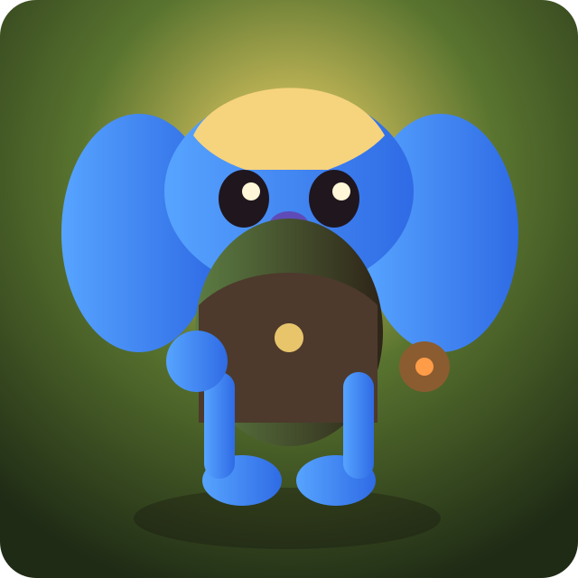
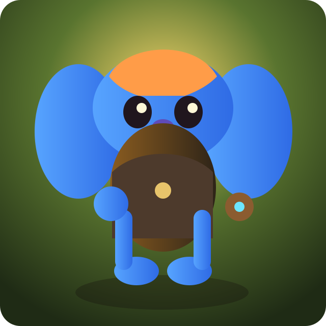
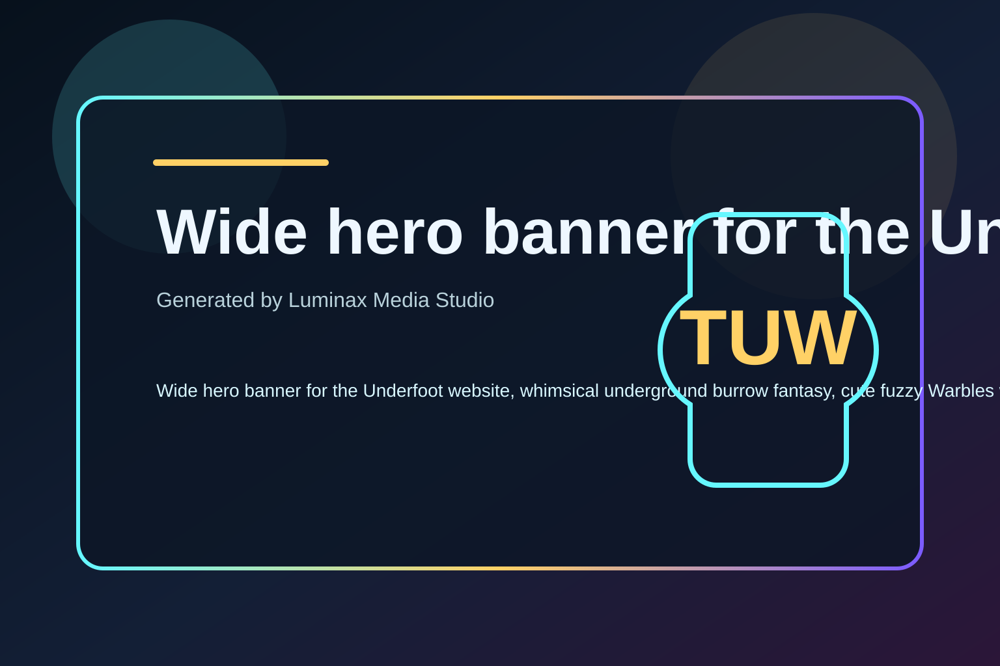
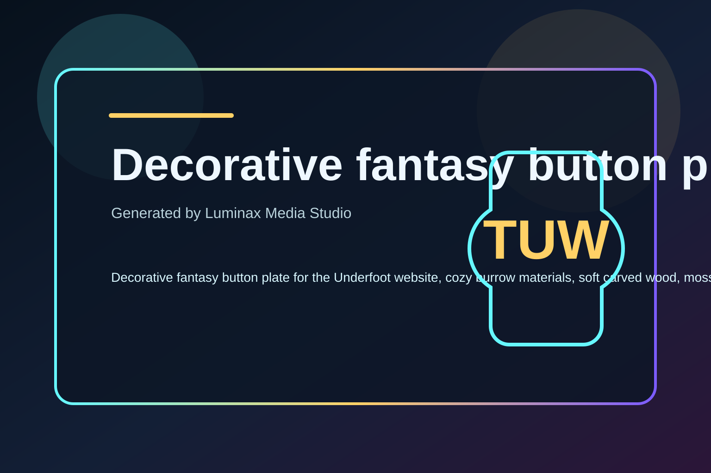
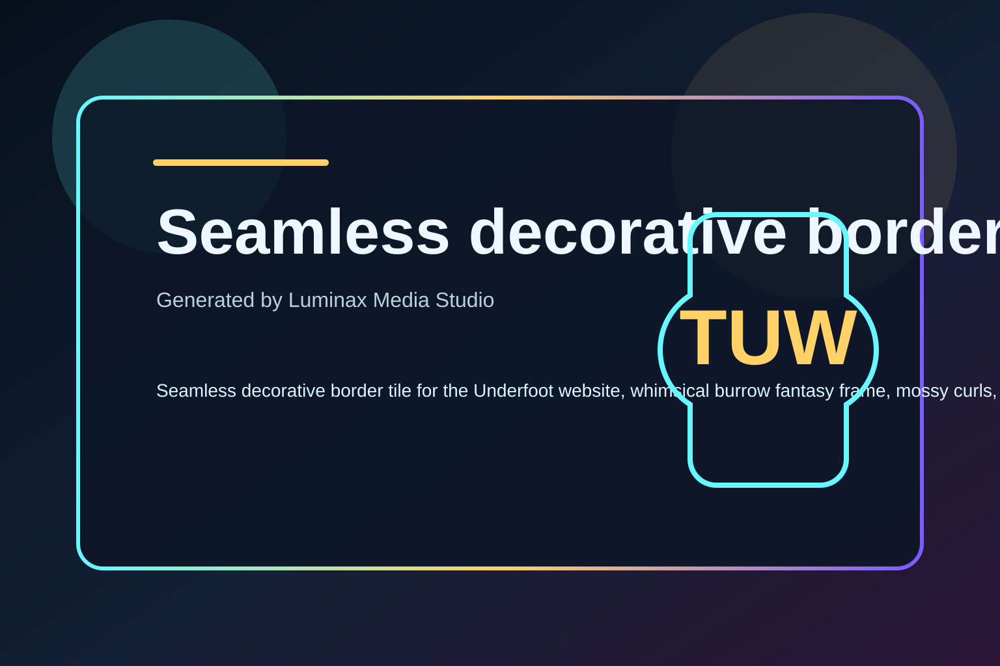

Ember
Fast, scrappy, bright, and ready to cling onto anything smaller than a chair and most things larger than a chair too.
Underfoot // Unity multiplayer prototype
Warbles below. Bigguns above. Chaos everywhere.
Underfoot is now being framed as a Unity game built around cute fuzzy Warbles and towering Bigguns. Luminax tracks the same active stack the project is actually using: Unity 6 + C#, Netcode-minded session flow, Meshy-generated creatures/props/UI art, and the world-service/MySQL bridge that keeps the web and prototype runtime aligned. Warbles sprint through tunnels, pop out of holes, grab objects with either hand, team-lift heavy junk, and scramble back underground. Bigguns stomp the topside, throw props, crush routes, and turn every village into a short, funny disaster.
Warble lineup
Fast, scrappy, bright, and ready to cling onto anything smaller than a chair and most things larger than a chair too.

WarbleBuilt for fast objective grabs, risky surface dashes, and quick leaps back down into the safety of the tunnel mouth.
The prototype attitude read: brave enough to grab the heavy crate, sensible enough to yell for two more Warbles first.
Reads soft and social at a distance, which is perfect right up until a Biggun notices the whole rescue team hiding by the same bucket.
Colorful silhouette target for tints, team accents, scarf swaps, and future hat or goggles cosmetics.

WarblePerfect size reference for the whole game: tiny enough to be snack-sized, readable enough to survive chaos at a glance.
Frontend flow
Audio rules
World map zone
Minigame portals
Prototype game list
Current interaction pass
Join first, then use the prototype actions to test the world loop.
No active guest session.
No session yet. Enter a name and select a map to create a guest session.
Underfoot site kit test

Tracked as part of the same Unity presentation lane that now feeds title screens, menu cards, and site-facing promo art.

Warm burrow colors and soft fantasy framing sized for buttons, chips, CTA plates, and future Unity menu call-to-action styling.

Part of Luminax’s active Underfoot art lane: generated support art for site polish while Meshy and imported in-project UI images cover the game-facing surfaces.